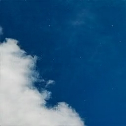

An archive becoming an instrument
Maladaptive
Daydream
Sleep, clouds, and writing. Three collected datasets, explored through the models and experiments they make possible.
Dataset studies for Milestone 2. Open each demonstration from this page or directly from the slides.

Collection complete
The material is here.
The relationships are still taking shape.
Sleep and cloud models have been built. The text collection is complete, a direct-identifier redaction pass is prepared, and RAG has been tested. Fine-tuning the journal corpus remains a next experiment.